1Introduction & motivation
Pit-stop strategy depends on knowing how fast a car will lap given its tyres, fuel load and position on track. We ask: using only information known before a lap is driven, can we predict its lap time, and is a Random Forest more accurate than Multiple Linear Regression?
Linear Regression mirrors the additive lap-time model used in race simulation (base pace + tyre wear + fuel + car) [5]. Random Forest belongs to the tree-ensemble family of XGBoost, which Todd et al. [1] found to be the most accurate predictor of F1 tyre energy (RMSE 4.79 vs 7.92 for linear regression).
2Data set & preparation
- Source:
fastf1v3.9,session.lapsof the 2023 Italian GP race: 958 lap records, 20 drivers, 51 laps, Medium & Hard tyres, no safety car. Precedent for FastF1 F1-strategy datasets: [2], [4]. - Target:
LapTimein seconds. - Leakage control: sector times, speed traps and
IsPersonalBestare measured during the lap and were excluded. - Features (7): TyreLife, Compound, LapNumber (fuel proxy, ≈2 kg burnt per lap), Team, and three engineered from timing: StartPos (position at lap start), GapAhead (interval to the car in front) and InDRS (gap < 1 s).
| Cleaning step | Removed | Remaining |
|---|---|---|
| No lap time (incl. every lap 1) | 29 | 929 |
| Pit-in / pit-out laps | 51 | 878 |
| Not green flag / inaccurate timing | 0 | 878 |
| Robust outliers (per-driver zMAD > 3) | 16 | 862 |
Median/MAD is used instead of mean/SD because it is not distorted by the outliers it detects. Removed laps were traffic, mistakes and leaders cruising at the end. Clean target: mean 86.92 s, SD 0.70 s, skew 0.20, so close to Gaussian.
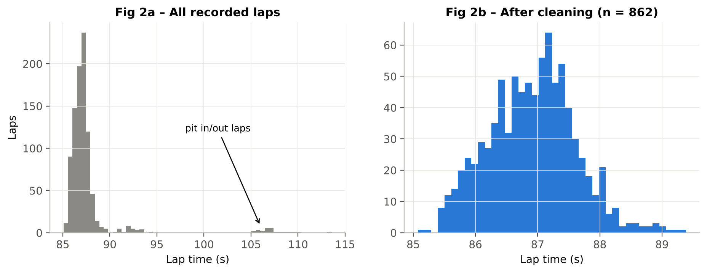
3Exploratory analysis
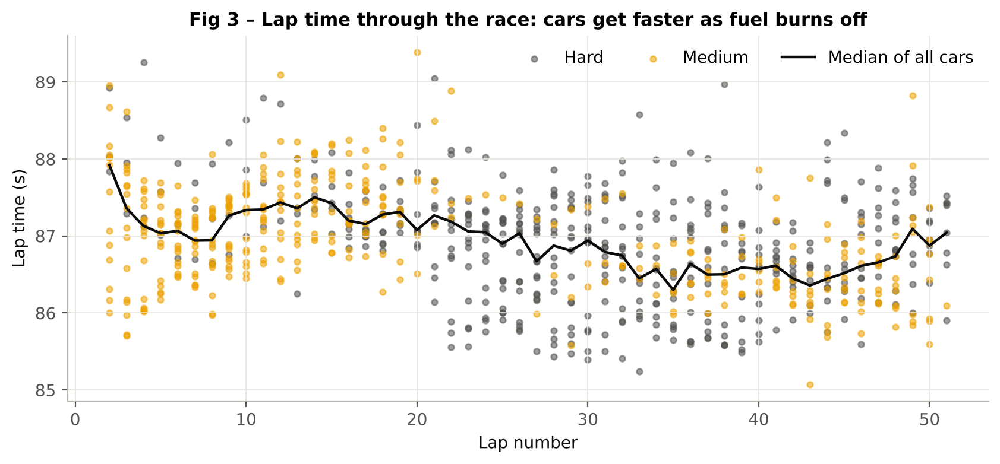
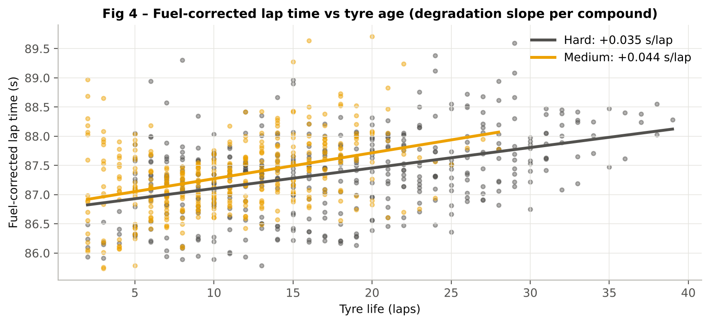
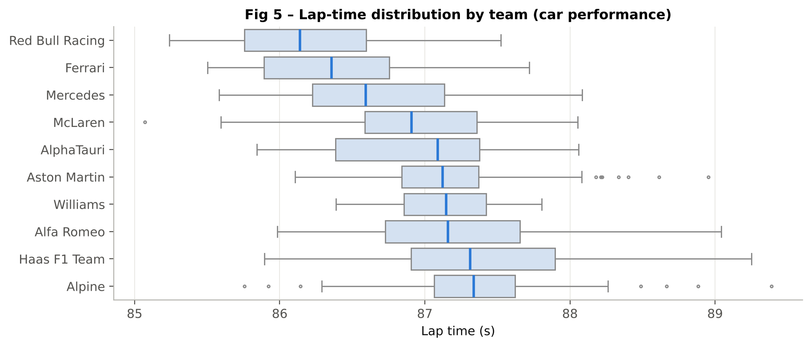
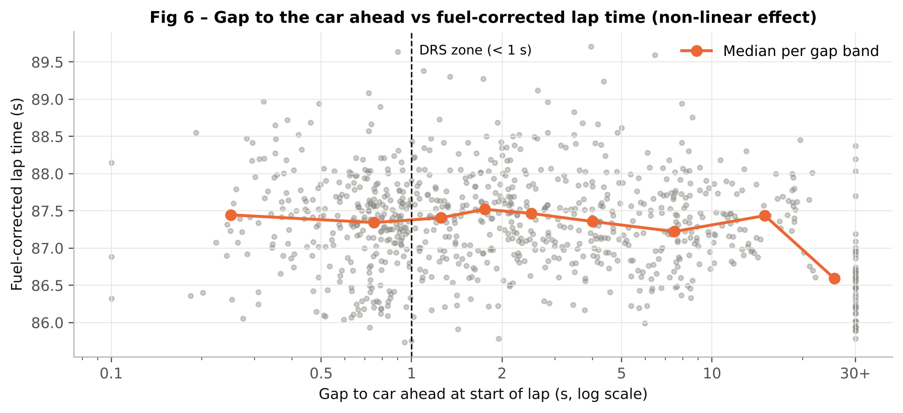
TyreLife and LapNumber correlate (r = 0.62) but both have VIF < 3. StartPos overlaps Team (VIF 7.6): acceptable for prediction, but those coefficients are less reliable.
4Methods
Multiple Linear Regression (LR)
Fits ŷ = w₀ + Σ wjxj by ordinary least squares, minimising Σ(y − ŷ)². The closed form w = (XᵀX)⁻¹Xᵀy is the maximum-likelihood solution under Gaussian noise [7]. Categorical variables are one-hot encoded and numeric ones standardised.
- Interpretable: coefficients in seconds
- Matches tyre/fuel physics [5]
- Extrapolates along trends
- Very fast
- Assumes linear, additive effects
- Sensitive to outliers & collinearity
- Interactions must be hand-crafted
Random Forest Regression (RF)
An ensemble of CART trees, each grown on a bootstrap sample (bagging), with a random subset of features tried at each split to de-correlate the trees [6]. A tree predicts the mean lap time in its leaf and the forest averages all trees. Out-of-bag laps give a free validation error.
- Learns non-linearity & interactions
- No scaling; robust to skew/outliers
- Few hyper-parameters; OOB estimate
- Cannot extrapolate beyond the training target range
- Less interpretable
- ≈70× slower to train here
5Hypotheses
- Both models will clearly beat a naive baseline (predicting the mean lap time: RMSE 0.709 s).
- As in [1], the tree ensemble (RF) will achieve a lower test RMSE than LR.
- Because trees cannot extrapolate, LR will forecast late-race laps (unseen tyre ages) better.
6Methodology
- 75 : 25 train/test split (646 / 216 laps), stratified by compound; the test set is unseen until the end.
- 5-fold CV on the training set to select the LR structure and the RF hyper-parameters (grid of 60 combinations).
- Metrics: RMSE (primary, as in [1]), MAE, R², plus fit and predict times.
- Significance: Wilcoxon signed-rank test on paired test errors and a corrected resampled t-test over 5×3 repeated CV [9].
- Forecast test: train on laps 2–38, predict laps 39–51.
7Parameter selection & experimental results
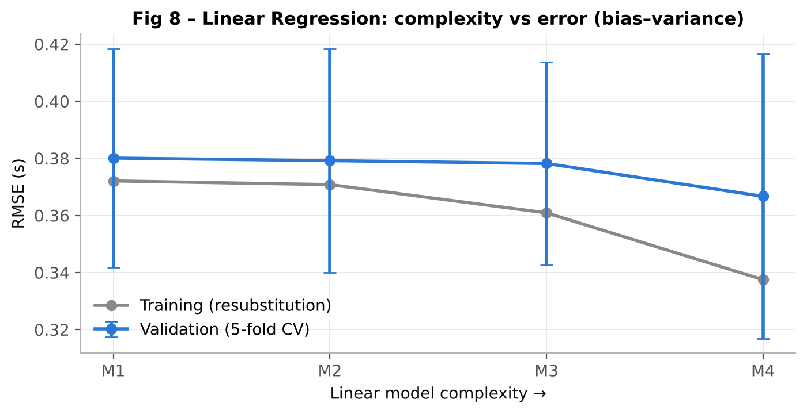
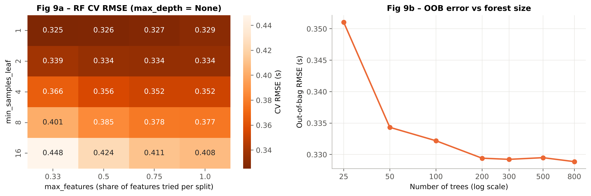
| Unseen test set (216 laps) | Linear Reg. | Random Forest |
|---|---|---|
| CV train (resubstitution) RMSE | 0.371 | 0.126 |
| CV validation RMSE | 0.379 | 0.327 |
| Out-of-bag RMSE | – | 0.330 |
| Test RMSE (s) | 0.378 | 0.301 |
| Test MAE (s) | 0.284 | 0.218 |
| Test R² | 0.715 | 0.819 |
| Fit / predict time (s) | 0.009 / 0.004 | 0.62 / 0.11 |
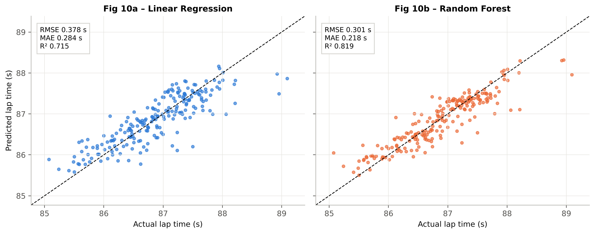
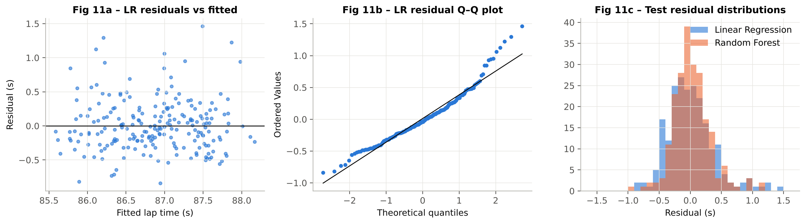
8Analysis & critical evaluation
Interpolation is not forecasting. A random split lets the model see laps 10 and 12 and predict lap 11. Strategy needs the next 10 laps. Trained on laps 2–38, 23 % of the forecast laps have a tyre age never seen in training.
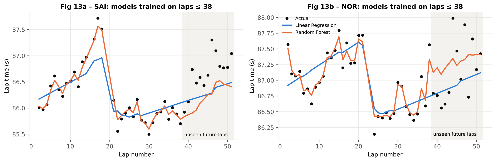
| Forecast laps 39–51 (212 laps) | RMSE (s) | R² |
|---|---|---|
| Linear Regression (M2) | 0.449 | 0.42 |
| Random Forest | 0.528 | 0.20 |
| LR M4 polynomial (the CV winner) | 0.523 | – |
| Hybrid: LR + RF on residuals [4] | 0.447 | – |
The ranking reverses: LR is 15 % better (hypothesis 3 confirmed). Random-fold CV rewarded flexibility that fails out of range, and the one-SE rule protected the choice of LR. The hybrid is best on both tests (0.291 s hold-out, 0.447 s forecast).
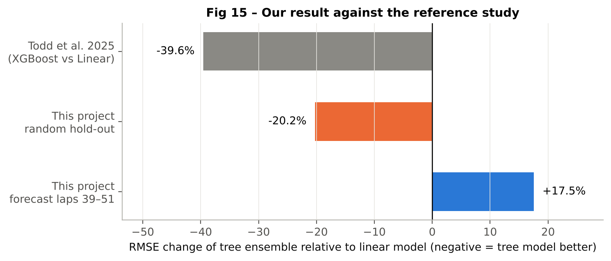
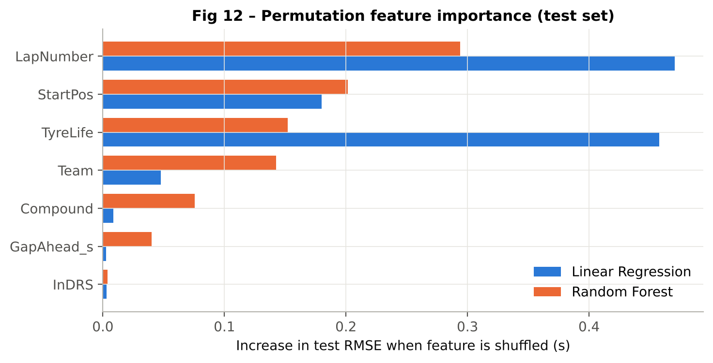
9Prediction with the chosen model
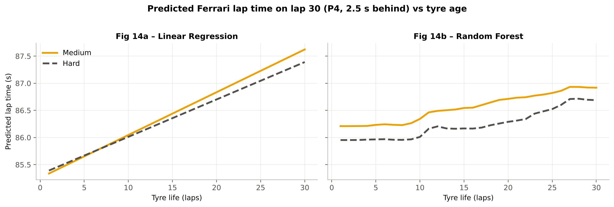
Insight from the M2 coefficients: each lap of tyre age costs +0.068 s (Hard) / +0.080 s (Medium); each lap of fuel burnt saves −0.038 s. The Medium starts 0.075 s faster but is slower after ≈7 laps. RF predicts the Hard as faster at every age for a Ferrari on lap 30, consistent with the Medium → Hard one-stop most teams used.
10Lessons learned & future work
- Which is better? RF for accuracy within the data (interpolation); LR for forecasting and interpretability. The two are complementary.
- Leakage control and a validation design that matches the use case mattered more than the choice of algorithm.
- Future work: all dry 2022–24 races with tests on unseen circuits, as in [1]; per-lap telemetry and track temperature; GroupKFold by driver or race; XGBoost; Monte-Carlo strategy simulation [5].